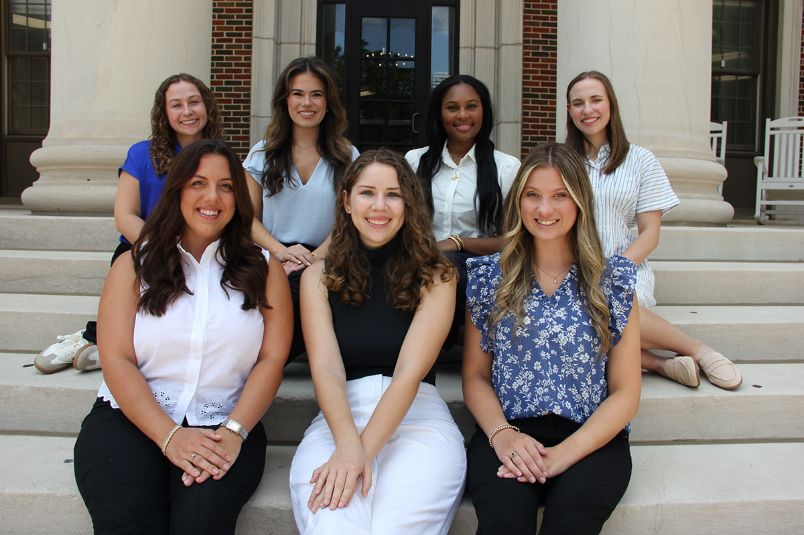
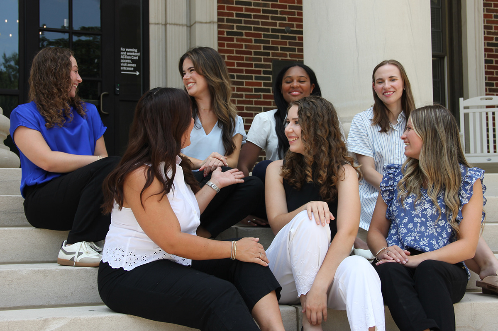
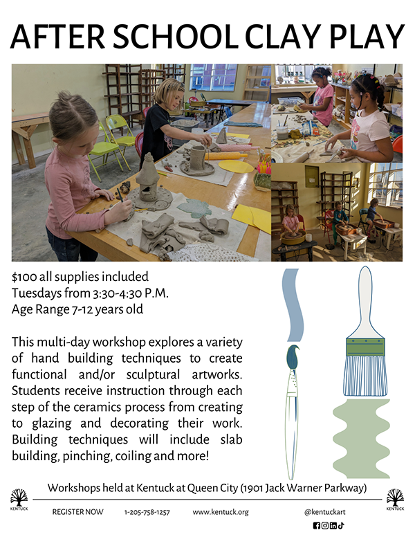
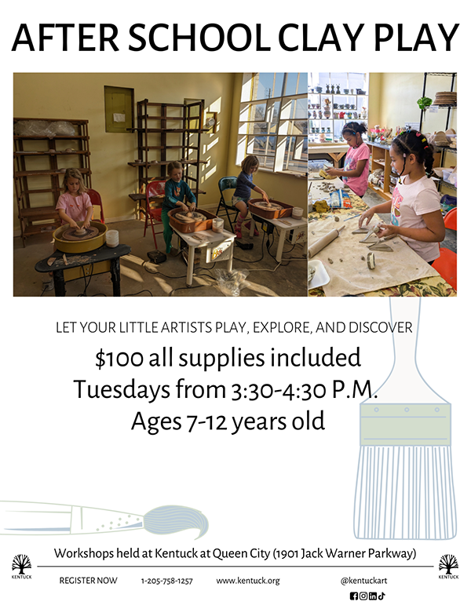

public relations student society of america
2025-2026 EXEC board


VP OF COMMUNITY OUTREACH
As the 2025-2026 VP of Community Outreach, I was responsible for leading initiatives that connect our organization with the broader community. members. This included maintaining communications with local contacts, whether for educational outreach or community partnerships. Scheduling events, as well as meetings and deadlines for work both internal and external to the committee. As well as developing deliverables along with my committee members. Prior to being elected to the role of VP, I worked as committee member researching and securing the community partners for the 2025-2026 school year.

KENTUCK ARTS CENTER 2025-2026 community partner


The committee researched and developed deliverables to aid in increasing participation in Kentuck Art Center's children's workshops by 10%. The team collected contacts for groups and organizations local to the Tuscaloosa and Northport area. These contacts were packaged into Xcel sheet files for the purposes of Kentuck Art Center's Outreach team. The team also created seven flyer designs. Six designs detailing information pertaining to one of the four workshops, and a singular comprehensive flyer outlining all four youth workshops.
PRESS COVERAGE
RED ROOK PRESS 2025-2026 community partner
The committee developed two strategic briefs for the editor and chief, each with a respective focus on one of the two larger goals of the organization: increasing staff and submissions numbers. Once approved, the team complied public contacts for Red Rook Press to utilize in their outreach efforts external to the University of Alabama system. Presently, the committee continues to work in partnership with the press, developing promotional deliverables for their Special Projects department.


HIGH SCHOOL OUTREACH
During the 2025-2026 school year, PRSSA visited four high schools. My role as VP required me to conduct outreach to social workers and teachers in the Tuscaloosa school district. Additionally, I scheduled the class visits and the PRSSA members that would conduct the presentation. For each school, I recolored the presentation design and attached the logo for school mascot to showcase the branding of the school. This double as an example of branding to showcase in a presentation on personal branding.
CRISIS WORKSHOP
On November 6th, 2025, I participated in a crisis simulation workshop hosted by the Public Relations Council of Alabama. This was a fantastic opportunity to learn and exercise skills in crisis communication writing skills.